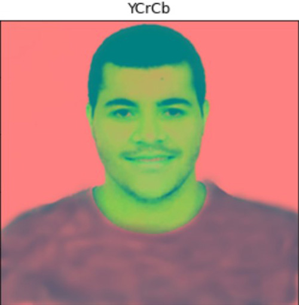
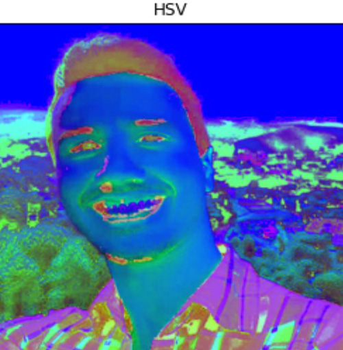
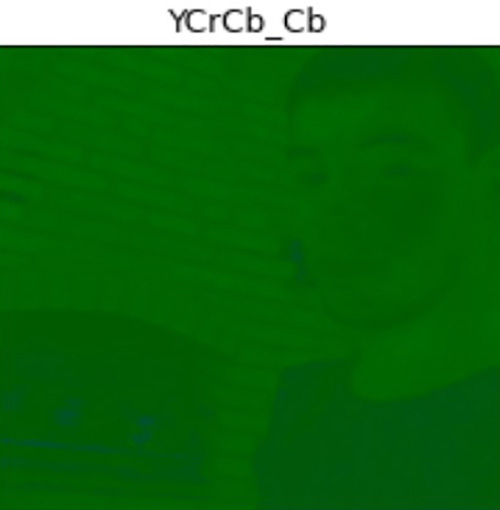
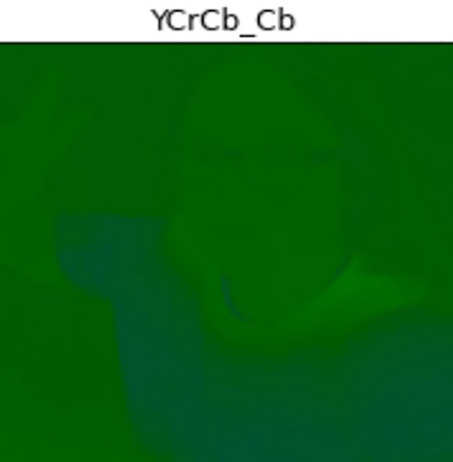
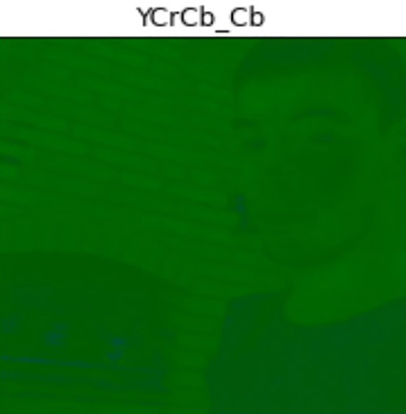
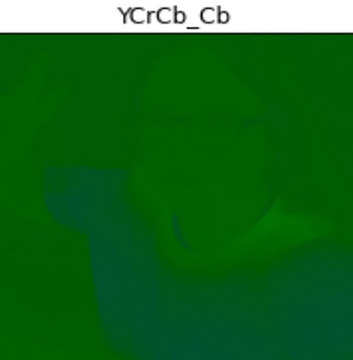

Conversões entre espaços de cores
Imagens do Grupo
RGB
BGR
Imagem Grupo YCrCb

Imagem Grupo HSV
Separação das Camadas RGB individualmente
Camada R


Camada G


Camada B


Separação dos Canais YCbCr
YCrCb_Y


YCrCb_Cr

YCrCb_Cb
 



Comparar arquivos comprimidos JPEG
Grupo


Jaqueline


Gabriel


Marcos Aurélio


Leonardo


TABELA COMPRESSÃO